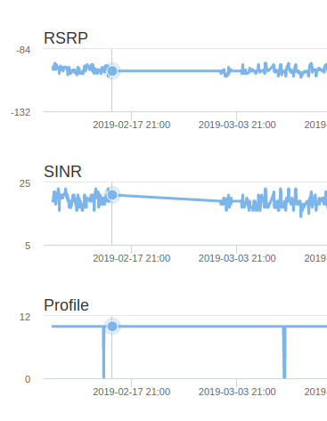

Have Performance Management, Monitoring and Performance Assessment for GPON, xDSL and 4G Broadband.
Monitor your GPON CPE (TX Power, RX Power), xDSL and 4G (SINR, RSRP, RSRQ). Devices Management (CPE), upgrade firmware via FOTA (Firmware Over the Air) and Analytics on a single platform.
Reduction of Costs by approximately 46% (Real CASE) Reduction of unproductive technical visits.
Take action on problems faster avoiding high rates of "Churn", Change WiFi passwords, WiFi Channels, DNS settings, among others.
Customers always with updated Firmware versions, it can also be updated in batches.
Managed Network and Performance, Loyal and Satisfied Customers.
Check the quality of your network through charts. See how good it is customer's Download, Upload, Latency, Jitter, Packet Loss and Availability rate.
100%
50%
10%
Define your Marketing Strategy with Phoenix One, set a smart path to your sales force, and discover areas requiring investments.
Solution certified by EAQ/ANATEL. Phoenix One helps reporting network quality to regulatory agencies.
Have a powerful tool without having to own a huge technologic structure, or choose on premise structure.
Don't wait until customer speaks up, see the problem previously and guarantee an awesome service quality.
SMG350 is a next-generation Gigabit Passive Optical Network (GPON) terminal, ideal for Fiber to The Home solution.
With the transmission rates of up to 2.488Gbps, one GPON port and one Gigabit Ethernet port, It provides high-performance forwarding capabilities to ensure smooth VoIP, HD video streaming experiences.
Model (SMG_CABO_01): Drop CD Cable (Low Friction Dielectric Compact).
Fiber Optic Access Cable / FTTx (FTTH and FTTA)
Display low friction characteristic
Flammability Class: Low Smoke and Zero Halogen Emission - LSZH (Low Smoke Zero Halogen)
Optical unit with 2 dielectric traction elements with split construction.
Model (SMG_CABO_02): Drop CM Cable (Compact Metal Drop Low Friction).
Fiber Optic Access Cable / FTTx (FTTH and FTTA)
Display low friction characteristic
Flammability Class: Low Smoke and Zero Halogen Emission - LSZH (Low Smoke Zero Halogen)
Optical unit with 2 metal traction elements with split construction.
Modelo (SMG_CABO_03): ASU120 (Cabo Óptico Dielétrico com Fibra Monomodo).
Single-Mode Fiber Optic Cable for structured cabling systems for voice, data and image traffic, distributed on campus, between buildings, requiring external optical interconnections.
Model (SMG_CABO_04): ASU80 (Single-fiber Fiber Optic Cable).
Single-Mode Fiber Optic Cable for structured cabling systems for voice, data and image traffic, distributed on campus, between buildings, requiring external optical interconnections.
Model (SMG_CABO_05): ASU80 MINI (Dielectric Optical Cable with Singlemode Fiber).
Single-mode fiber optic cable optimized for urban subscriber access facilities, recommended for structured cabling systems for voice, data and image traffic, distributed on campus, between buildings, requiring external optical interconnections.
Model (SMG_CABO_06):
UTP 4Pairs Cable-Category 5e Indoor.
Conductor: CCA (20% Copper, 80% Aluminum), Size (24AWG X 4P)
Insulation: HDPE material.
Model (SMG_CABO_07):
UTP 4Pairs Cable-Category 5e Indoor.
Conductor: CCA (20% Copper, 80% Aluminum), Size (23AWG X 4P)
Insulation: HDPE material.
Fiber optic adapter can be inserted into different types of fiber optic connector.
Achieve the conversion of different interfaces like SC, FC, LC, ST,MPO.
Zirconia ceramic ferrule with high durability and reliability. UPC/APC type available
SemiGlobe Tecnologia was founded in 2014, focused on seeking, developing and applying on-demand solutions to its customers with flexibility and agility.
Headquartered in São Paulo and with the branch in China, the company has a R & D team focused on developing Internet solutions of Things and System of telecommunications network operations management software.
We believe in working with honesty and perseverance, seeking to always be open to different ideas, always focusing on delivering a quick and personalized solution.